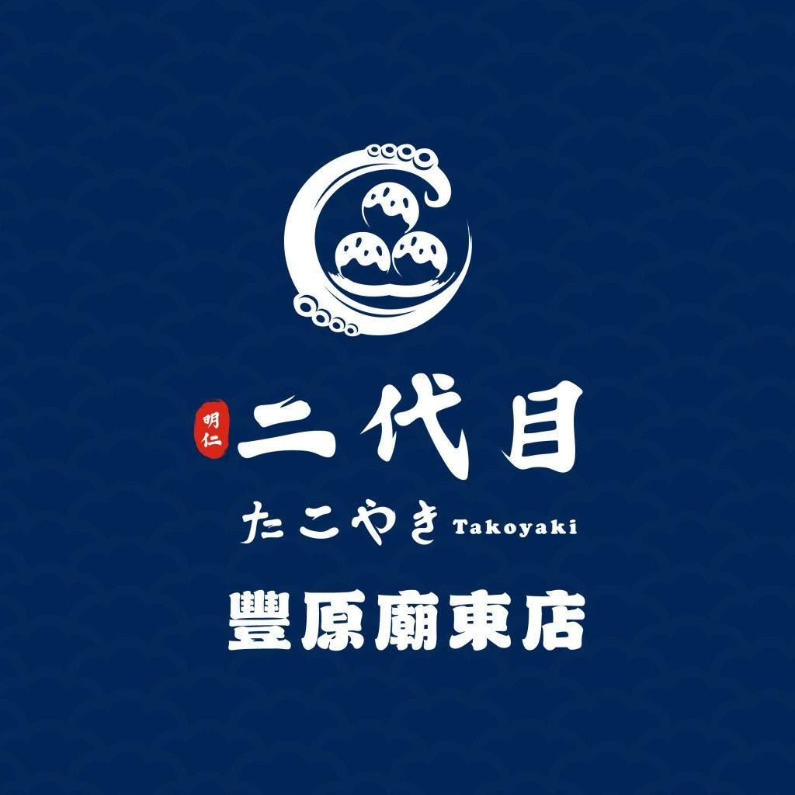
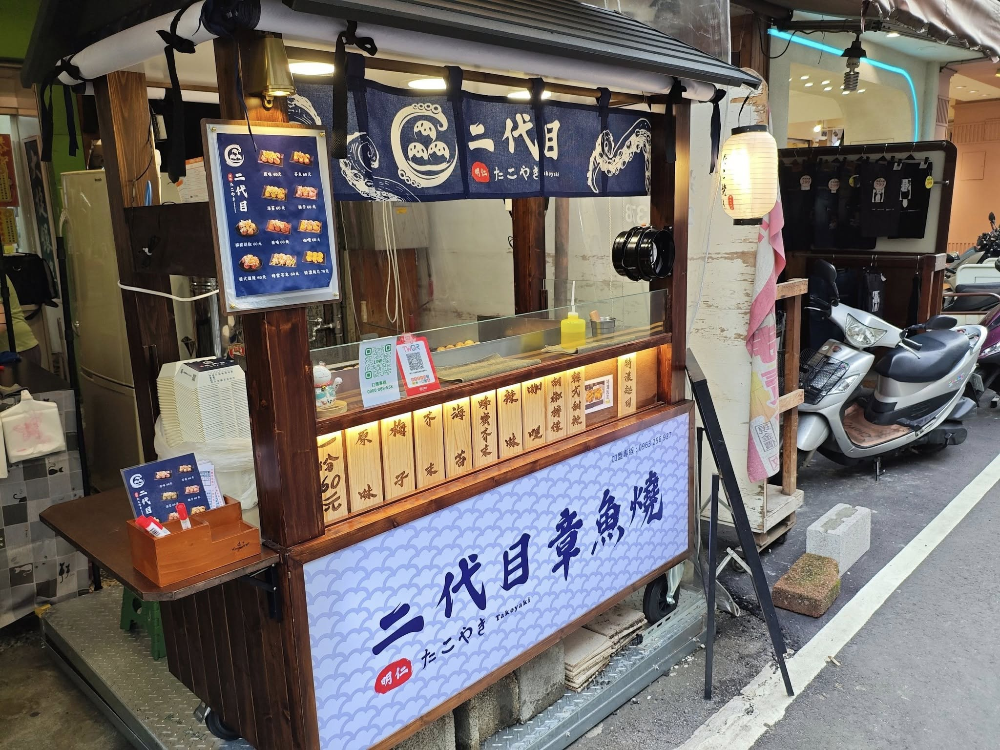
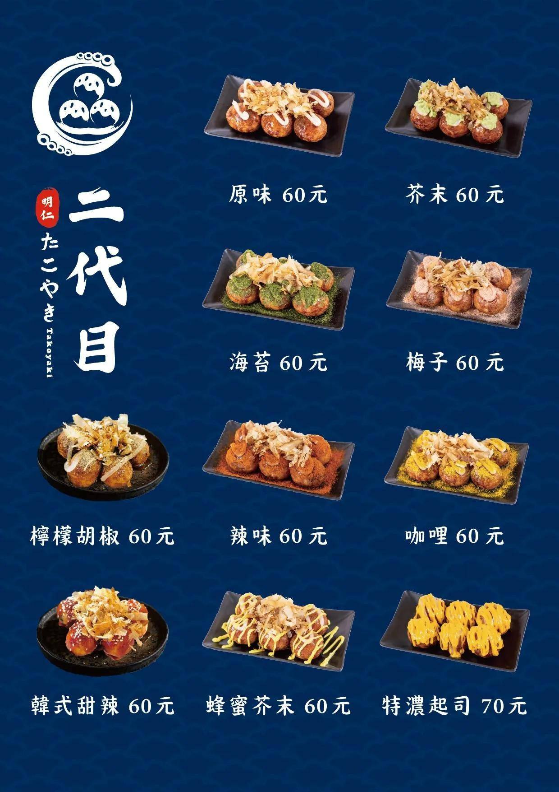

店家特色
二代目章魚燒主打親民且易於接受的街頭小吃，以簡單純粹的風味作為核心，其中「原味」象徵最貼近台灣日常的經典口感，而特濃起司則展現創新與變化。店家選擇落腳於廟口商圈，融入人潮聚集的生活場景，使料理不僅是食物，更成為在地文化與日常記憶的一部分。
｜原味，是最純粹的台灣小吃｜
二代目章魚燒主打親民且易於接受的街頭小吃，以簡單純粹的風味作為核心，其中「原味」象徵最貼近台灣日常的經典口感，而特濃起司則展現創新與變化。店家選擇落腳於廟口商圈，融入人潮聚集的生活場景，使料理不僅是食物，更成為在地文化與日常記憶的一部分。


